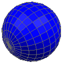
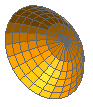

You can define a mesh:
On geometry created in the Modeling application or imported from other CAD modeling packages.
Using primitives in the FEM file to create structured 2D or 3D meshes based on a simple geometric form type. You must specify the size, location, and orientation based on an associated coordinate system, and mesh density of the elements.

You can define primitives by:
Points — Allow you to specify three-dimensional coordinates to define key points to provide the shape information of the primitive.
Parameters — Allow you to define the primitive in relation to the X, Y, and Z-axes of a coordinate system using angular and linear values.
You can position the primitive with respect to the global coordinate system by translating or rotating the primitive's origin. You can define a primitive mesh and define a mesh collector to assign material, physical, and thermo-optical properties to it. Alternatively, you can define a mesh collector first and then assign the primitive mesh you create to it.
When you create a primitive with 2D elements, the top side of each 2D element faces a specific direction by default, depending on the type of primitive.
With three-dimensional primitives, such as the Box Primitive or Sphere Primitive, the top sides of the associated 2D elements face outward, away from the primitive.
With two-dimensional primitives, such as the Rectangle Primitive or Disc Primitive that you create by specifying parameters, the top sides of the associated 2D elements face the +Z direction.
With two-dimensional primitives, such as the Rectangle Primitive or Disc Primitive, that you create by selecting points, the top sides of the associated 2D elements are determined by the right hand rule, using the sequence P1, P2, P3 to define a rotation.
|
Note |
3D elements have no top or bottom side, so the rules do not apply to primitives created with these elements (example: Solid Brick Primitive, Solid Cylinder Primitive). |